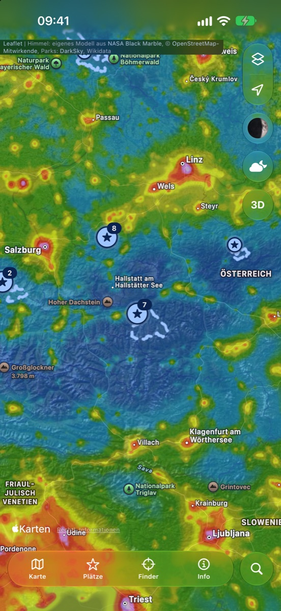

Star Spot Finder
Dunkler Himmel, nah bei dir · Dark skies near you
Finde den dunkelsten Himmel in deiner Nähe – und erlebe ihn, bevor du losfährst.
Star Spot Finder zeigt die künstliche Himmelshelligkeit weltweit auf Apple Karten, berechnet aus Satellitendaten der NASA (2012–2025). Dazu: Sternenparks und Beobachtungsplätze, Unterkünfte unter dunklem Himmel, Wetter und Seeing für die nächsten Nächte, ein Mondkalender, die Frage „Wo ist es am besten?“, Routen mit Fahrzeit-Umkreis und eine Bodenansicht, in der du den Sternhimmel über dem Ort schon vorher siehst.
- Kostenlos
- Kein Konto
- Keine Werbung
- Kein Tracking
- iPhone · iPad · Mac

Find the darkest sky near you – and see it before you set off.
Star Spot Finder maps artificial sky brightness worldwide on Apple Maps, computed from NASA satellite data (2012–2025). Plus dark sky parks and observing sites, places to stay under dark skies, weather and seeing for the coming nights, a moon calendar, “Where is it best?”, routes with driving range and a ground view showing the starry sky above a place before you go.
- Free
- No account
- No ads
- No tracking
- iPhone · iPad · Mac